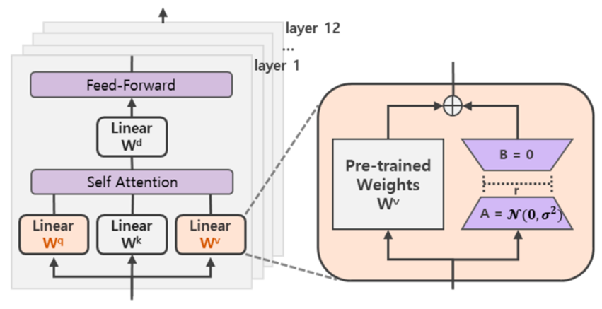
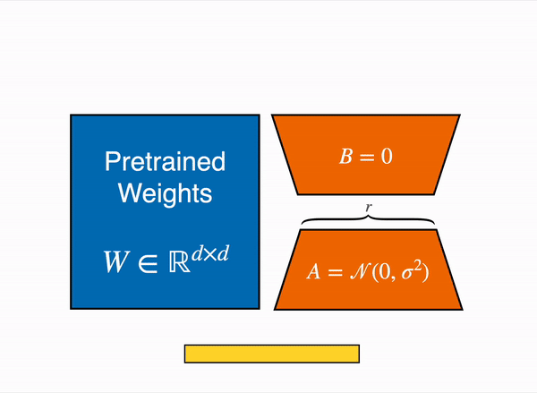
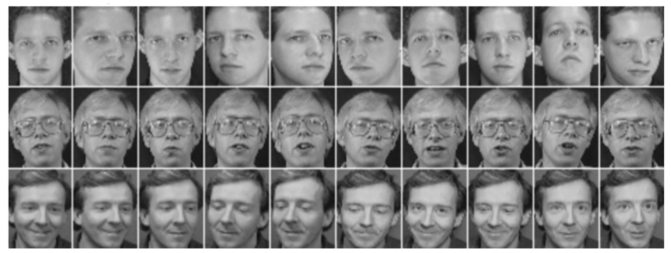
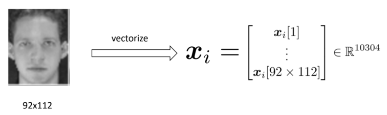

PCA与矩阵分解
PCA与奇异值分解
主成分分析 (PCA) 与一种强大的矩阵分解技术——奇异值分解 (Singular Value Decomposition, SVD)也有着深刻的联系。
奇异值分解 (SVD)
首先，我们回顾一下什么是SVD。SVD是线性代数中一个非常强大的工具，它指出：任何一个实数矩阵X∈Rd×n（无论是否为方阵），都可以被分解为三个矩阵的乘积： X=UΣV⊤ - U∈Rd×d：是一个正交矩阵 (orthogonal matrix)。它的d个列向量ui被称为左奇异向量 (left singular vectors)。它们构成了Rd空间（即X的列空间）的一组标准正交基。
- V∈Rn×n：也是一个正交矩阵。它的n个列向量vi被称为右奇异向量 (right singular vectors)。它们构成了Rn空间（即X的行空间）的一组标准正交基。
- Σ∈Rd×n：是一个d×n维的（伪）对角矩阵。它的非零元素只在对角线Σ(i,j)上（当i=j时），这些值σi被称为奇异值 (singular value)。
这些奇异值是非负的，并且按降序排列：σ1≥σ2≥…≥σp≥0，其中p=min(d,n)。
SVD在几何上可以理解为：任何线性变换X都可以被分解为三个动作：一个旋转（V⊤）、一个沿着新坐标轴的缩放（Σ）、以及另一次旋转（U）。 应用奇异值分解
- 我们构建协方差矩阵S=XX⊤（假设X是d×n的中心化数据矩阵）。
- 我们对d×d维的S进行特征分解：S=UΛU⊤。（注意，这里的U表示特征向量矩阵，需要与SVD中的U区分）。
- PCA的解A（即主成分方向）是由S的k个最大特征值所对应的特征向量u1,…,uk组成的。
SVD与特征分解的关系：我们不必显式地计算S。让我们直接取数据矩阵X的SVD（X=UΣV⊤），并用它来代入S的表达式： S=XX⊤=(UΣV⊤)(UΣV⊤)⊤ 根据转置法则(AB)⊤=B⊤A⊤，我们得到： S=(UΣV⊤)(VΣ⊤U⊤) 由于V是正交矩阵，V⊤V=I（n×n单位矩阵）。因此，中间的V⊤V消失了： S=UΣ(V⊤V)Σ⊤U⊤=U(ΣΣ⊤)U⊤ 现在我们得到了S的一个新表达式： S=U(ΣΣ⊤)U⊤ 我们将它与S的特征分解S=UΛU⊤进行比较。 - PCA（S的特征分解）中的特征向量矩阵U，与数据矩阵X的SVD中的左奇异向量矩阵U是完全相同的。
- PCA（S的特征分解）中的特征值矩阵Λ（对角线为λi），与X的SVD中的奇异值σi的平方(ΣΣ⊤)相对应。即λi=σi2。
结论：这意味着，要找到PCA的解A=[u1,…,uk]，我们不需要计算协方差矩阵S并对其进行特征分解。我们可以直接计算数据矩阵X的SVD，并提取其左奇异向量U的前k列作为我们的主成分A。 相比特征值分解的优势
- 数值可靠性 (Numerically reliable)：
SVD的计算算法通常比直接计算S=XX⊤再进行特征分解要数值稳定得多。在计算XX⊤的过程中，如果X的某些奇异值非常小，它们的平方（即S的特征值）会变得更小，可能导致在浮点数运算中丢失精度。SVD直接对X操作，避免了这种精度损失。 - 节省计算时间 (Save computation time)：
这在特定情况下尤为重要，尤其是当X是一个“高而窄”的矩阵时（即维度d远大于样本数n）。 - 传统方法：需要计算S=XX⊤。这是一个d×d维的巨大矩阵。对这个d×d矩阵进行特征分解的计算成本非常高（大致为O(d3)）。
- SVD方法：我们可以使用“经济型SVD”(economy SVD) 或直接计算X⊤X（一个n×n的小矩阵）的特征分解来得到V和Σ，然后再反算出U。这种方法的计算复杂度与n（较小的那个维度）相关（大致为O(dn2)），这会比O(d3)快得多。
总之，SVD提供了一种更健壮、更高效的计算PCA的现代方法，它避免了显式地构建庞大且可能不稳定的协方差矩阵S。 总结：低秩矩阵分解
基于PCA的这些求解过程，我们可以将PCA总结为一个矩阵分解 (Matrix Factorization) 问题
从向量到矩阵
我们从PCA的第一个目标函数开始（假设数据已中心化，μ=0）： A⊤A=Ik,{θi}minimizei=1∑n∥xi−Aθi∥22 这个公式是对n个向量的重构误差（L2范数的平方）求和。我们可以将这个“求和”形式优雅地重写为“矩阵”形式。 - 数据矩阵X(d×n)：将所有高维数据点xi作为列向量，组合成一个d×n的矩阵。
X=[x1,x2,…,xn] - 低维坐标矩阵Θ(k×n)：同样，将所有对应的低维坐标θi作为列向量，组合成一个k×n的矩阵。
Θ=[θ1,θ2,…,θn]
现在，我们来看矩阵乘积AΘ： AΘ=A[θ1,…,θn]=[Aθ1,…,Aθn] AΘ矩阵的第i列就是xi的重建向量（投影点）。 因此，误差矩阵X−AΘ为： X−AΘ=[x1−Aθ1,…,xn−Aθn] 我们原始的目标是最小化所有这些列向量的L2范数平方之和。这恰好是矩阵X−AΘ的Frobenius范数 (Frobenius norm) 的平方。 ∥X∥F2=i∑j∑xij2=j∑∥xj∥22 因此，∑i=1n∥xi−Aθi∥22=∥X−AΘ∥F2。 A⊤A=Ik,Θminimize∥X−AΘ∥F2 低秩矩阵分解
这个新的形式min∥X−AΘ∥F2是一个非常著名的问题。 - A是d×k维，Θ是k×n维。
- 它们的乘积AΘ是一个d×n维的矩阵。
- 根据矩阵秩的性质，rank(AΘ)≤min(rank(A),rank(Θ))≤k。
由于我们选择k≪d且k≪n，矩阵AΘ是一个低秩矩阵 (low-rank matrix)。 PCA的目标等价于：寻找一个秩最多为k的矩阵（即AΘ），使其尽可能地“接近”原始数据矩阵X（这里的“接近”由Frobenius范数来衡量）。 这本质上是将X因式分解 (Factorize) 为两个“瘦”矩阵A和Θ（“瘦”对应小的秩）。 这个低秩矩阵分解问题有一个著名的闭式解 (closed-form solution)，它由Eckart-Young-Mirsky定理给出，该解直接通过X的SVD得到。 我们首先计算X的SVD： X=UΣV⊤ 其中U(d×d) 和V(n×n) 是正交矩阵，Σ(d×n) 是奇异值对角矩阵。 Xk=UkΣkVk⊤ - Uk=[u1,…,uk](d×k，U的前k列)
- Σk=diag(σ1,…,σk)(k×k，最大的k个奇异值)
- Vk⊤(k×n，V⊤的前k行)
我们的目标是找到A和Θ使得AΘ=Xk=UkΣkVk⊤。 AΘ=(Uk)(ΣkVk⊤) - A=Uk=[u1,…,uk]
- Θ=ΣkVk⊤=⎣⎡σ1v1⊤⋮σkvk⊤⎦⎤
这完美地满足了我们的约束：A⊤A=Uk⊤Uk=Ik（因为U的列是标准正交的）。 这证实了我们之前的结论：PCA的基A正是数据矩阵X的SVD的前k个左奇异向量。 - 非凸问题的闭式解：
矩阵分解问题minA,Θ∥X−AΘ∥F2是一个非凸 (nonconvex) 优化问题，因为它涉及两个未知变量A和Θ的乘积。通常，非凸问题只能通过迭代（如梯度下降）找到局部最优解。 然而，PCA是一个特例：这个非凸问题竟然拥有一个可以通过SVD获得的全局最优闭式解。这是一个非常罕见且强大的特性。
- 解的无穷性 (Infinitely many optimal solutions)：
这个解不是唯一的。对于任意k×k的正交矩阵R（即R⊤R=Ik），我们可以定义一组新的解： - A′=AR
- Θ′=R⊤Θ
- 约束满足：(A′)⊤A′=(AR)⊤(AR)=R⊤A⊤AR=R⊤IkR=Ik。
- 目标函数值不变：A′Θ′=(AR)(R⊤Θ)=A(RR⊤)Θ=AIkΘ=AΘ。
这表明SVD找到的解只是无限多最优解中的一个（它恰好是使得Θ的行向量正交的那个解）。在几何上，这对应于我们可以任意旋转k维子空间内的坐标系，而不会改变它与原始数据点之间的距离。

移除正交约束
在上一节中，我们将PCA视为一个低秩矩阵分解问题，但它带有一个严格的约束：基矩阵A的列向量必须是标准正交的（即A⊤A=Ik）。 现在，我们考虑一个更具灵活性的（也更常见）的矩阵分解问题，我们移除了这个正交约束。
我们的目标函数变为（去掉了A⊤A=Ik）： A∈Rd×k,Θ∈Rk×nminimize∥X−AΘ∥F2 这里的目标仍然是找到两个因子矩阵A(d×k维) 和Θ(k×n维)，使得它们的乘积AΘ能够最佳地（在Frobenius范数下）逼近原始数据矩阵X。 a) 非凸优化问题 (Nonconvex optimization problem)
与PCA形式一样，这个问题涉及两个未知变量A和Θ的乘积，因此它是一个非凸问题。 非凸问题通常很难求解，因为它们可能包含许多局部最小值 (local minima) 和鞍点 (saddle points)，迭代算法（如梯度下降）可能会陷入其中，而找不到全局最优解。图示中的马鞍形曲面（在优化领域中很典型）就是为了直观地展示这种非凸的、复杂的地形。
b) 闭式解的存在性 (Closed-form solution exists)
尽管这个问题是非凸的，但它（就像PCA一样）是一个特例：它同样存在闭式解，并且这个解也是通过SVD（奇异值分解）得到的。
根据Eckart-Young-Mirsky定理，X的最佳k-秩近似Xk是由截断SVD给出： Xk=UkΣkVk⊤ 其中Uk=[u1,…,uk]，Σk=diag(σ1,…,σk)，Vk⊤=[v1,…,vk]⊤。 我们的目标是找到A和Θ使得AΘ=Xk。 c) 无穷多的等价解 (Infinitely many equivalent solutions)
由于我们不再有A⊤A=Ik的约束，我们如何将Xk=UkΣkVk⊤分解为AΘ具有极大的灵活性。 - 在前面，我们通过直接匹配找到了一组最优解：
AΘ=(Uk)(ΣkVk⊤) A=Uk=[u1,…,uk] Θ=ΣkVk⊤=⎣⎡σ1v1⊤⋮σkvk⊤⎦⎤ - 这回，我们将奇异值Σk对称地“拆分”到A和Θ中，这在某些应用中（如数据可视化）很常见：
AΘ=(UkΣk1/2)(Σk1/2Vk⊤) A=UkΣk1/2=[σ1u1,…,σkuk] Θ=Σk1/2Vk⊤==⎣⎡σ1v1⊤⋮σkvk⊤⎦⎤ - 更一般的解：事实上，对于任何k×k维的可逆矩阵C，我们都可以定义：
A′=AC Θ′=C−1Θ 此时A′Θ′=AΘ=Xk，这仍然是一个最优解。
这种解的不唯一性 (non-identifiability) 是通用矩阵分解的核心特征。
d) 更先进的结果 (Advanced results)
这个min∥X−AΘ∥F2问题是矩阵分解的基础。在实际应用中（例如推荐系统、文本挖掘），这个问题会变得更复杂，例如： - 处理缺失值：当X中有很多元素未知时（例如用户未对电影评分）。
- 加入正则化：为了防止过拟合，我们会添加λ(∥A∥F2+∥Θ∥F2)这样的正则项。
在这些更复杂的情况下，SVD不再能提供闭式解，我们就必须依赖迭代算法（如交替最小二乘法ALS或随机梯度下降SGD）来求解这个非凸问题。
低秩矩阵分解框架
现在，我们可以将前面的内容总结为一个通用的框架。这是一个在机器学习、统计和信号处理中无处不在的核心问题。
给定一个数据矩阵X∈Rd×n（其中d是特征数，n是样本数）和一个目标秩k（通常k≪min(d,n)）。我们的目标是找到两个“瘦”的因子矩阵： - 基矩阵A∈Rd×k
- 坐标矩阵Θ∈Rk×n
使得它们的乘积AΘ能够最佳地近似原始矩阵X。这个“最佳”是通过最小化Frobenius 范数（即所有元素的平方误差之和）来定义的： A∈Rd×k,Θ∈Rk×nminimize∥X−AΘ∥F2 - 几何意义：寻找一个秩最多为k的矩阵（AΘ）来“最接近”X。
- 优化特性：这是一个非凸 (nonconvex) 优化问题。然而，它是一个特殊的非凸问题，其全局最优解是已知的。
我们首先计算X 的 SVD： X=UΣV⊤ 其中U(d×d) 和V(n×n) 是正交矩阵，Σ(d×n) 是奇异值对角矩阵。 根据Eckart-Young-Mirsky 定理，这个全局最优解(A∗,Θ∗)必须满足一个条件，即它们的乘积必须等于X的最佳k-秩近似矩阵Xk。 这个定理进一步指出，Xk是由X的截断 SVD (truncated SVD)唯一给出的： Xk=UkΣkVk⊤ - Uk=[u1,…,uk](d×k，U的前k 列)
- Σk=diag(σ1,…,σk)(k×k，最大的k 个奇异值)
- Vk⊤(k×n，V⊤的前k 行)
因此，我们的问题就转化成了：找到一对A和Θ，使得它们的乘积满足： AΘ=Xk=UkΣkVk⊤ 这个解是非唯一的（无穷多解）。我们可以构建一个初始特解 (Particular Solution)，例如：
- A0=UkΣk1/2
- Θ0=Σk1/2Vk⊤
通用解 (General Solution) ：对于任何 k×k 维的可逆矩阵 C，以下解都是等价的最优解： A′=A0C Θ′=C−1Θ0 因为A′Θ′=(A0C)(C−1Θ0)=A0IΘ0=Xk。 主成分分析 (PCA) 是这个通用问题下的一个带约束的特例。
A,Θminimize∥X−AΘ∥F2subject toA⊤A=Ik 这个A⊤A=Ik的正交约束极大地限制了解的灵活性。它迫使“通用解”中的可逆矩阵C必须是一个正交矩阵R（即 R−1=R⊤）。 PCA的应用
大模型的高效微调
在大型模型（如GPT、Llama等大型语言模型）的预训练 (pre-training) 阶段之后，我们会得到一个基础模型Θ^。这个Θ^代表了模型学习到的所有权重，它是一个（或一系列）维度极其巨大的矩阵。 微调 (Fine-tuning)
我们通常需要将这个通用模型适配到特定的下游任务（例如，法律文档摘要、客服对话等）。这个过程称为微调 (fine-tuning)。
完全微调 (Full Fine-tuning) ：传统的微调方法是试图学习一个“增量”ΔΘ来更新整个模型。 ΔΘ∈Rm×nminimizeL(Θ^+ΔΘ) - L是任务的损失函数（例如交叉熵）。
- Θ^是预训练好的、冻结的权重矩阵（例如m=4096,n=4096）。
- ΔΘ是我们要学习的权重变化量。
问题在于ΔΘ和Θ^具有完全相同的维度（m×n）。对于一个拥有数十亿甚至数千亿参数的LLM，学习和存储这个ΔΘ在计算上是极其昂贵的： - 训练内存开销：训练ΔΘ需要存储其梯度和优化器状态（例如Adam的动量），这需要海量的GPU显存。
- 存储开销：如果我们有100个不同的任务，我们就需要存储100份巨大的ΔΘ副本（或者100份完整的模型），这是不现实的。
LoRA的思想
LoRA (Low-rank Adaptation) 引入了一个核心假设，这个假设与PCA和SVD的思想同源：
换句话说，尽管ΔΘ的维度是m×n，但它所代表的“有效变化”的内在维度r (intrinsic rank) 其实非常小。 LoRA的解决方案：LoRA不再去学习那个巨大的m×n矩阵ΔΘ，而是学习ΔΘ的一个低秩分解 (low-rank decomposition)。 它将ΔΘ近似为两个更小的矩阵A和B的乘积： ΔΘ≈Am×rBr×n 关键在于r≪min{m,n}。r就是我们选择的“秩”，在实践中r通常是一个非常小的数（如8, 16或64）。因此，LoRA的优化问题变为： A∈Rm×r,B∈Rr×nminimizeL(Θ^+AB) 在LLM的Transformer架构中，自注意力机制 (Self-Attention) 的核心是：
- WQ(查询矩阵)：决定了对于当前这个词，模型需要“去寻找什么样的信息”。
- WK(键矩阵)：决定了上下文中每个词“能提供什么样的信息”。
- WV(值矩阵)：决定了上下文中每个词“实际携带的信息内容”。
微调一个任务，很大程度上就是改变模型的“注意力模式”。例如，微调“法律助手”时，模型需要学会：
- 当看到一个“问题”时，它的WQ应该去“查询”相关的“法律术语”。
- 它的WV应该“提取”更正式、更精确的“值”。

研究发现，WQ和WV是控制这种“注意力适应”最关键的两个矩阵。改变它们，就能最高效地改变模型的行为。因此，LoRA将有限的r资源（例如r=8）集中用在这两个最关键的矩阵上，以达到最佳的“四两拨千斤”的效果。 因此，LoRA被应用到查询WQ和值WV矩阵： - 冻结Θ^：原始LLM的所有权重Θ^保持不变，不计算它们的梯度。
- 初始化A和B：A通常使用高斯分布随机初始化，而B初始化为全零。
- 前向传播：对于输入x，原始的计算是h=xΘ^。现在变为h=xΘ^+xAB。
- 反向传播：只计算L相对于A和B的梯度，并更新A和B。
（初始化B=0是一个关键技巧，它保证了在训练刚开始时ΔΘ=AB=0，模型的状态与预训练模型完全一致，从而保证了训练的稳定性。） 
- 保持分离：一旦有了新的输入就去计算h=xΘ^+xAB。这会带来一点点额外的计算延迟（因为多了一次矩阵乘法）。
- 融合权重：我们先计算ΔΘ=AB，然后将其加回原始权重Θ^new=Θ^+ΔΘ。在推理时，我们直接使用这个融合后的Θ^new，也就是对于新的输入，计算h=xΘ^new。
LoRA的优势
LoRA的应用使我们需要训练的参数数量发生了巨变：
- 节省计算内存
- Full Fine-tuning：需要训练m×n个参数。
- LoRA：只需要训练A和B的参数，总共m×r+r×n=r(m+n)个参数。
举个例子，假设LLM中的一个权重矩阵Θ^维度为m=4096,n=4096。 - Full Fine-tuning：4096×4096≈1677万个参数。
- LoRA (r=8)：8×(4096+4096)=65536个参数。
LoRA使得需要训练的参数数量减少了99%以上。这就是它能极大节省计算内存的原因。
- 节省存储空间并实现“可插拔”
LoRA实现了“基础模型”与“任务适配器”的分离。
- 基础模型 (Θ^)：一个巨大的、通用的模型（例如70B的Llama 3，约140GB）。
- LoRA适配器 (A,B)：针对特定任务（如“法律助手”）的权重，它们非常小（例如10MB）。
例如，我们想要微调出一个“法律助手”模型时，传统的完全微调方法需要更新这140GB文件中的所有权重Θ^然后保存，如果还想微调一个“客服助手”，必须重复这个过程，再保存另一个140GB的模型。但是使用了LoRA之后，我们只需要一个基础模型，然后“冻结 (Freeze)”所有参数Θ^，只训练新添加的、微小的A和B矩阵（例如总共10MB）。训练结束时，只需要保存这10MB的A和B矩阵。这就是“LoRA适配器”。当我们请求“法律助手”，只需要在140GB的基础模型中“插上”对应Alegal,Blegal矩阵，当我们请求“客服助手”，只需要更换为Aservice,Bservice矩阵。 {hlegal=xΘ^+xAlegalBlegalhservice=xΘ^+xAserviceBservice 这意味着，我们可以只保留一个基础模型，并通过动态加载不同的LoRA适配器，让同一个模型服务于成百上千种不同的任务，极大地节省了存储和部署成本。

人脸识别与表示
最后，我们从PCA的抽象理论带入到一个具体且非常经典的应用案例：人脸识别与表示（这个领域常被称为“特征脸”或Eigenfaces）。
数据矩阵化
这里展示的是如何将一个真实的图像数据集（ORL人脸数据库）转换为PCA算法可以处理的数学对象——数据矩阵X。 ORL人脸数据库 (The ORL Database of Faces) 是一个包含40个不同人的人脸图像的集合。
- 样本量：每个人有10张不同的照片。因此，总样本数n=40×10=400张图像。
- 图像规格：每张图像都是一个92×112像素的灰度图。
- 数据特点：这10张照片是在不同条件下拍摄的，包括：
- 不同的光照 (lighting)
- 不同的面部表情 (facial expressions)（例如，睁眼/闭眼，微笑/不笑）
- 不同的面部细节 (facial details)（例如，戴眼镜/不戴眼镜）
这些“变化”对PCA来说至关重要。PCA的目标就是从这400张图像中，自动地学习到捕捉这些主要变化（如表情、光照）的主成分（方向）。
由于PCA算法处理的是向量 (xi∈Rd)，而不是2D图像，所以需要将图像数据“翻译”成线性代数语言。我们将每张92×112的2D图像“压平”或“拉直”，转换成一个一维列向量xi。 具体来说，可以简单地将图像的第1行像素、第2行像素、...、直到第92行像素，逐行拼接起来，形成一个长长的列向量。
这个新向量的维度（即特征数量）是图像中的总像素数。
d=92×112=10,304 那么，每一张人脸图像，都是10,304维空间中的一个点。这个空间的每个维度对应原始图像中的一个特定像素位置。接下来，我们将所有400个样本（即400个d维向量）组合成一个单一的数据矩阵X。 
X的每一列就是一张人脸图像的向量化表示。 X=[x1,x2,…,x400] X是一个Rd×n维的矩阵。其中，d=10,304 (特征数，即像素数)，n=400 (样本数，即图像数)。 我们接下来的所有PCA操作（如计算均值、SVD分解）都将在这个10,304×400的矩阵X上进行。这是一个d≫n的典型“高维小样本”场景。 特征脸与低维表示
我们现在来求解之前定义的PCA矩阵分解问题，并设定一个具体的低维度k=40： A⊤A=Ik,Θminimize∥X−AΘ∥F2 通过对d×n（10304×400）的数据矩阵X进行SVD分解（X=UΣV⊤），我们找到了这个问题的解： A=Uk=[u1,…,u40] 这个d×k（即10304×40）的矩阵A包含了我们提取出的k=40个主成分，它们是这个数据集最重要的特征 (features)。 矩阵A的每一列（例如uj）都是一个d=10304维的列向量。为了直观地理解它，我们可以执行之前“向量化”的逆操作：将这个10304维的向量重新塑形 (reshape) 回一个92×112的2D图像。 下图所示的40张图像，就是A矩阵中40个列向量（主成分）的可视化结果。它们被称为“特征脸” (Eigenfaces)。 
它们不是数据集中真实的人脸，而是PCA算法从400张训练图像中学习到的最优k维基底，代表了人脸数据集中方差最大的那些“变化方向”。 排名靠前（方差最大）的特征脸（如左上角）通常捕捉的是最主要的变化，例如整体光照方向或面部的普遍轮廓。排名靠后的特征脸则捕捉更细微的变化，例如微笑/不微笑的表情差异、是否戴眼镜的细节等。
一旦我们有了这个“特征脸”基矩阵A，我们就可以用它来分析和表示图像。 线性组合 (Linear Combination)：PCA模型告诉我们，任何一张（中心化后的）人脸图像xi都可以被近似地重建 (reconstruct) 为这40个特征脸uj的线性组合（即加权求和）： xi≈Aθi=j=1∑kθi,juj - xi：原始的10304维人脸图像。
- A：包含40张10304维特征脸的10304×40矩阵。
- θi：一个40×1的低维坐标向量。
降维 (Dimensionality Reduction)：这个θi∈R40向量是xi的低维表示。 - θi中的每一个元素θi,j都代表了第j个特征脸uj在构成xi时的“重要性” (importance)或“权重”。
- 我们成功地将一个xi∈R10304的高维数据点，压缩并表示为了一个θi∈R40的低维特征向量。
这个k维的向量θi包含了xi的绝大部分关键信息（身份、表情、光照）。在实际应用中（如人脸识别），我们不再需要比较10304维的原始图像，而是转而比较40维的θi向量，这极大地提高了计算效率和鲁棒性。